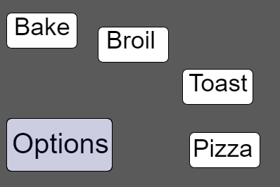
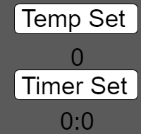

I think this is a good design for various reason. First would be that it is quite simple without not too many dials or sliders to worry about. You are mainly pressing up and down for each setting you want.
It keeps it simplier by not including too many presets such as different variety of foods. Most of the time I find myself not using the presets anyways. So the normal bake, broil and toast presets were what I mainly focused on. I wanted to keep the simplicity of it by getting rid of screen clutter where I could. So that is why I had the options disapper once another button was pressed since there is no need to display the modes more than one place on the screen. The toaster oven itself also spells out what you are setting, so Temp says temp set, same with timer that says timer set.
